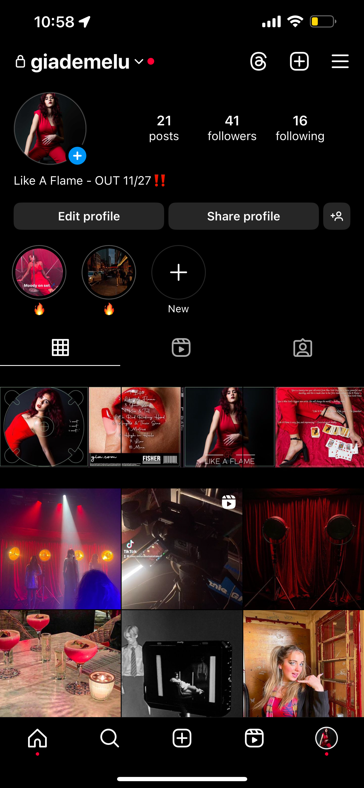
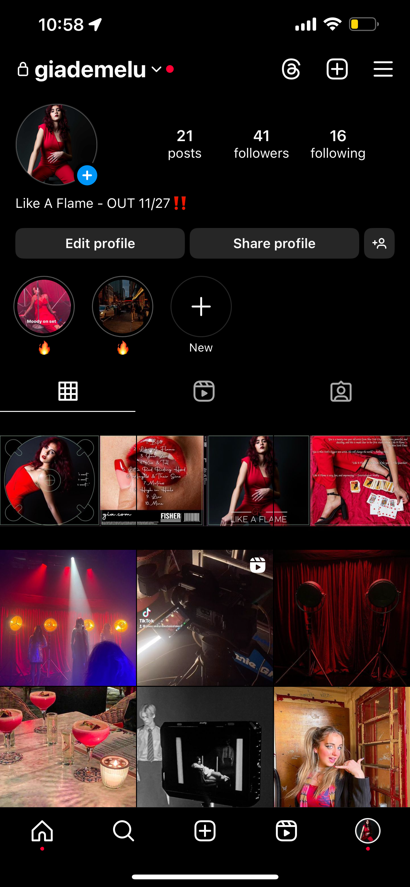
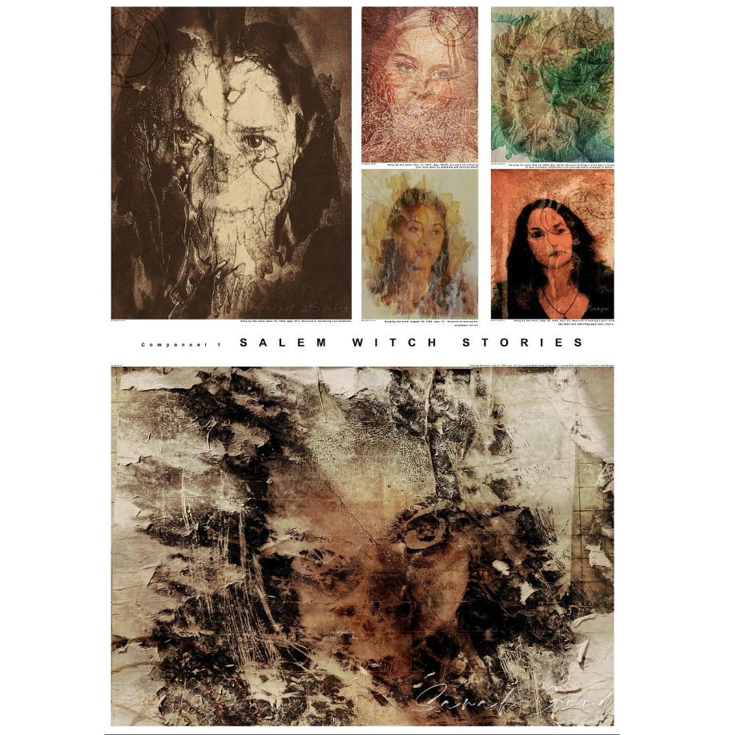

Project Management
Kathe Kollwitz


Branding an exhibition at the MoMA. I did Kathe Kollwitz. Posters made using Adobe Photoshop/Illustrator. Videos made using After Effects. 2024.
No Faith Studios
/NFS1.jpg)
(Click to scroll through!) No Faith Studios Hypothetical Fashion Show/Presentation for Fashion Show Production. Made by Jake Morosini, Tyler Slaugh, Athena Li, and Robin Singh Johal. 2024.
Like A Flame
 


Like A Flame Project. Group project where we had to create, edit, and advertise a music video. Music Video shot on Blackmagic Cameras and edited with Adobe Premiere Pro. Digipak made with Adobe Photoshop. Made by Jake Morosini, Mimi Pratt, Emily Bostock Jones, and Zoey Zhou. 2022.
Graphic Design
Life in Motion


(Click to scroll through!) Life in Motion Book. Made with Adobe Photoshop and Indesign. 2024.
Fashion in the 2010s

(Click to scroll through!) Fashion In The 2010s. Made with Adobe Indesign. 2023.
Futurism


Futurism Posters. Made With Adobe Illustraitor. 2023.
Coding
Library of Babel Inspired Website. Coded Using HTML, CSS, and JS. 2024.
The Witching Hour. Coded using HTML, CSS, and JS. Video shot by me using Canon Elph 135. 2024.
Video
FKA Twigs - which way
Reimagining a Music Video. Made with Adobe After Effects. 2023.
Parallels
Parallels between Cities and Forests. Made with Adobe After Effects. 2023.
BeReal
BeReal Animation. Made With Adobe After Effects. 2023.
Photography
Salem Witch Trials Fine Art Collection



Salem Witch Stories - A Fine Arts Photography Project I did on the victims of The Salem Witch Trials. Fine Art Techniques Used, Adobe Photoshop, Adobe Lightroom, and portraits shot with Nikon DSLR Cameras. 2020-2022.
Other Photography


Shot Using Nikon DSLR Cameras. Edited with Adobe Lightroom. 2020-2024.
Coded by Jake Morosini using HTML, CSS, & Javascript ♡.